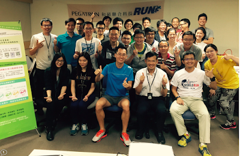

← 回部落格
耐力網科學化巡迴講座第五場：和碩承德廠區路跑社 & HRV 的解釋

到了第五場，終於能在時限內更精準地把想講的東西表達清楚了，每次分享都有收獲，謝謝耐力網 Xjack、和碩路跑社 Howard 和 Cherry 的協助促成。
其中有一位大哥：黃中于博士，也是和碩網通視訊研發中心的總經理，特別的是他已於今年的國道馬拉松完成百馬，完成過四場 226 超鐵。昨日下午四點半在新竹開完會，雖然他家住新竹，還是特地在會後開車北上來聽講，聽完已經接近九點半了，還要再開車南下。這份對於耐力運動的執著與求知精神實在讓人感動與佩服啊。
分享過程中，我順道提及最近正極度感興趣的 HRV(心率變異度)，黃博士提問要我再解釋清楚一些，我在台上一急就講錯了，回程上心裡不安，在此做個說明：
HRV 不是心率間隔的平均，而是「連續心跳速率的變化程度。其計算方式主要是分析藉由心電圖或脈搏量測所得到的心跳與心跳間隔的時間序列」，簡單地說是量測兩次心跳間隔時間的「變異程度」，量測的演算方法很多，大致上可分為兩種：
- 時域分析(或稱為時間域，Time domain），算法有很多種，最常見的是直接用「全部正常心跳間距之標準差，單位為微秒。」這也是目前大部分穿載式裝置和 APP 用的算法。所以是「間距的標準差」，不是「間距的平均」，我在回答時說錯了就是這個地方。
- 另一種方式，在醫學上，是用頻域分析(或稱為頻率域，Frequency domain)，比較精準：利用離散傅立葉變換，將心跳間隔的時間序列轉換為「頻域」，以功率頻譜密度(en:Power spectral density, PSD)或是頻譜分布(Spectral distribution)的方式表現。
我之前寫過一篇〈用 HRV 量化自己的疲勞程度〉，簡短地紀錄一下使用心得，有興趣朋友可以參考：http://rocky549.blogspot.tw/2015/05/920xt_2.html
--
此科學化訓練巡迴講座，是為了讓大家認識何謂「科學化訓練」以及「如何自主訓練與安排課表」。
此講座在近期的推廣階段，將由耐力網贊助大部分的講師費，若其他耐力運動社團對這個議題有興趣一起合作舉辦，可以直接 E-mail 給耐力網 XJ 先生談合作細節：centerforgaming@gmail.com
徐國峰・KFCS 耐力訓練系統
看更多文章 →